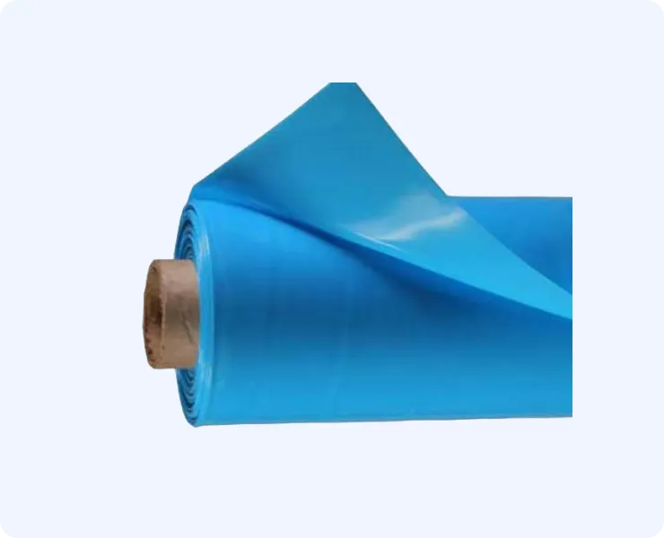

Вернуться в каталог

Плёнка для пруда
Плёнка ПВБ, 1мм, рулон 2.25*110м, синий
Цена и наличие
Цена уточняется. Нет в наличии.
Данные на 23.11.2026.
Характеристики
- Материал
- Поливинилбутираль
- Страна производитель
- Россия
- Длина рулона, м
- 110
- Толщина, мм
- 1
- Ширина рулона, м
- 2,5
- Длина рулона
- 110 м
- Максимальный срок эксплуатации, лет
- 20
- Производитель
- Винилит
- Цвет
- синий
Описание
Цена указана за м²
ПЛЕНКА ПВБ ВИНИЛИТ ДЛЯ ПРУДА 1ММ, РУЛОН 2,25*110М, ЦЕНА ЗА М2, ЦВЕТ СИНИЙ Пленка для пруда ПВБ- поливинилбутираль Срок службы более 20 лет. Пленка сохраняет все свои качества. Простой монтаж. Вы без труда можете сделать пруд самостоятельно. Эластичность. Растягивается до 300% при плюсовых температурах. Пленка изготавливается из экологичного материала. Сохраняет высокую прочность при низких температурах. Устойчива к корням растений и другим механическим воздействиям.
Где используется
Где используется пленка: искусственные пруды декоративные водоемы водоемы для разведения рыб фонтаны коммунальные отводные водоемы для гидроизоляции в строительстве